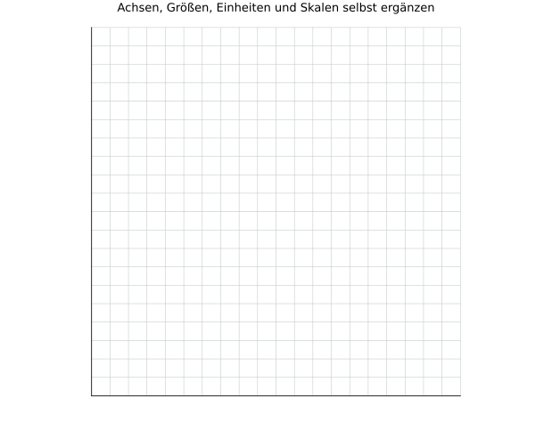

4.1 · Titrationsdaten zeichnen
Beschrifte und skaliere die Achsen selbst. Trage alle neun Werte ein und beschreibe den Verlauf. Die Leitfähigkeiten sind bereits volumenkorrigiert.
V(NaOH) / mL: 0,0 · 2,0 · 4,0 · 6,0 · 8,0 · 10,0 · 12,0 · 14,0 · 16,0
κkorr / (mS/cm): 4,20 · 3,63 · 3,03 · 2,47 · 1,86 · 1,30 · 1,85 · 2,36 · 2,93
Didaktische Übungsdaten bei konstanter Temperatur; keine experimentelle Messreihe.

Begründung / Ergebnis: ___________________________________________________
______________________________________________________________________
______________________________________________________________________
Chemie · Jahrgang 13 · Eigenständig erstelltes Übungsmaterial